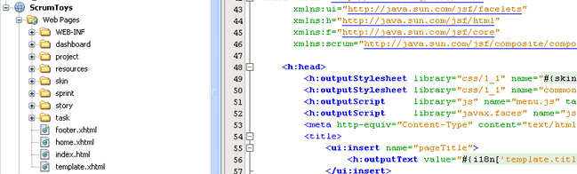
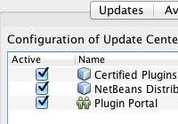

Разработка с использованием платформы веб-приложений

Для перехода к полноэкранному предварительному просмотру щелкните изображение
NetBeans IDE поддерживает различные платформы веб-приложений, включая все спецификации для разработки веб-приложений, предоставляемые в комплекте со спецификацией Java EE. Кроме того, можно настроить среду IDE для работы с дополнительными платформами на ваш выбор.
Поддержка веб-профилей Java EE 6
Веб-профиль Java EE 6 определяет подмножество спецификаций, которые могут быть использованы для создания веб-приложений. Помимо поддержки полной версии Java EE, среда NetBeans обеспечивает готовую поддержку веб-профиля, включая поддержку JSF, JSP и сервлетов.

Разработка JSF
IDE NetBeans поддерживает новейший стандарт JavaServer Faces (JSF) 2.1, а также предыдущие стандарты 2.0 и 1.2. IDE NetBeans поддерживает Facelets, официальную технологию представлений для JSF 2.1. Можно создать новый проект веб-приложения на основе платформы Facelets для работы со стандартными компонентами примеров реализации JSF.
IDE также поддерживает различные компоненты библиотек JSF(PrimeFaces, RichFaces, ICEfaces), которые могут упростить разработку страниц фейслетов.
Введение в JavaServer Faces

Создание клиентов на основе мастеров
Используйте средство создания приложений JSF CRUD (Create/Read/Update/Delete – создание, чтение, обновление, удаление) для построения функциональной страницы JSF для управления данными из базы данных. Мастер создания файла может создавать настраиваемые страницы CRUD JSF из существующих сущностей. Используйте шаблоны настраиваемых компонентов HTML и JSF для перетаскивания форм HTML и JSF на веб-страницы и создавайте таблицы данных JSF из сущностей. Кроме того, доступна возможность создания шаблонов Facelet и работа с ними.
Теперь, везде, где это возможно, среда IDE создает код с использованием аннотаций, а не дескрипторов развертывания.
Поддержка шаблонов JSF |
Разработка JSP |
Поддержка Hibernate |
|
|
|
|
Поддержка Spring |
Поддержка Struts |
Другие платформы |
|
|
|
 |


{kind=link}
{kind=link}
См. также
- На странице сведений о версии IDE NetBeans 7.3 приведен список специальных функций в последней стабильной версии.
- Более подробно о функциях последней стабильной версии см. на странице Новые замечательные возможности IDE NetBeans 7.3.
- Учебная карта по Java EE и Java Web для учебных курсов по началу работы.